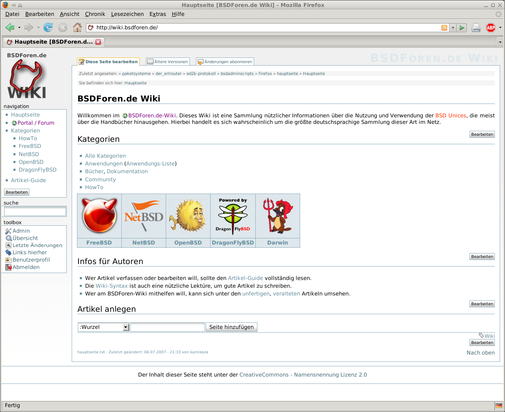

2.8. Firefox¶
Firefox ist ein Standalone-Browser, der im Gegensatz zum Vorgänger Mozilla keinen Web-Editor und keinen Mail- und News-Reader integriert hat. Er läuft auf nahezu jeder bekannten Rechnerplattform, es gibt auch embbede Versionen des Firefox und ist der härteste Konkurrent für den Mircosoft Internet Explorer, was die Verbreitungszahlen betrifft. Die ursprüngliche Idee war, ein Leichtgewicht aus der doch recht großen Mozilla-Suite zu machen. Fehlende Funktionen sollen über Plugins nachgerüstet werden. Wie die anderen Browser aus der Mozilla-Familie auch, bedient sich Firefox des Gecko-Renderers. 
{kind=link}
2.8.1. Internationalisierung¶
Unter FreeBSD gibt es nur eine englische Version. Will man also eine andere Sprachversion, muß man noch den Port www/firefox-i18n. Dieser Port installiert knapp 50 verschiedene Sprachversionen für den Firefox. Da die wenigsten alle diese Sprachen sprechen, kann man vorab eine Liste der benötigten Sprachen in /etc/make.conf festlegen.
FIREFOX_I18N= de
Eine Übersicht der Ländercode findet man hier http://de.wikipedia.org/wiki/ISO-3166-1-Kodierliste. Ein Blick in das Makefile des Ports verrät zusätzlich, welche Sprachversionen verfügbar sind.
2.8.2. Add-ons¶
Unter https://addons.mozilla.org/de/firefox findet man verfügbare Erweiterungen für den Firefox.
2.8.3. E-Mails¶
Während man beim Mozilla oder Seamonkey E-Mail-Links anklickt und der Mail-Editor automatisch gestartet wird, benötigt der Firefox hier eine Konfigurationseinstellung, um den gleichen Effekt z.B. mit dem Thunderbird zu erreichen. Hierzu muß man als URL folgendes eingeben:
about:config
Es erscheint eine Liste der Einstellungen. Mit der rechten Maustaste in dem Fenster kickt man zunächst Neu und dann String an. Es wird eine Box geöffnet, die nach einem Eigenschaftsnamen fragt. Hier ist network.protocol-handler.app.mailto einzugeben. In einer weiteren Box erfolgt die Frage nach dem Wert für diese Eigenschaft. Das ist der Programmpfad z.B. /usr/local/bin/thunderbird.
2.8.4. Suchmaschinen¶
In der Suchmaske oben Rechts kann die Suchmaschine intuitiv ausgewählt werden. Leider ist das bei der Suche über die URL-Eingabe nicht so. Aber auch hier kann über die Seite about:config eine andere Suchmaschine eingestellt werden.
Dazu kann der Schlüssel keyword.URL angepasst werden. Dort wird
einfach der Aufruf an die Suchmaschine eingetragen. Firefox hängt die
Sucheingabe einfach ans Ende an, also sollte das natürlich der letzte
Parameter sein. Das Folgende Beispiel verdeutlicht das für die
Suchmaschine Clusty.
Preference Name |
Status |
Type |
Value |
|---|---|---|---|
keyword.URL |
user set |
string |
2.8.5. Siehe auch¶
ed2k-Links/aMule - Eine Beschreibung für die Einbindung von ed2k-Links.
irc-Links/xChat - Einbinden von xChat (irc-links).
Mozilla mit Java- und Flashsupport - Einbinden von Acrobat-Reader, Flash, Java.
Zuletzt geändert: 2021-05-24